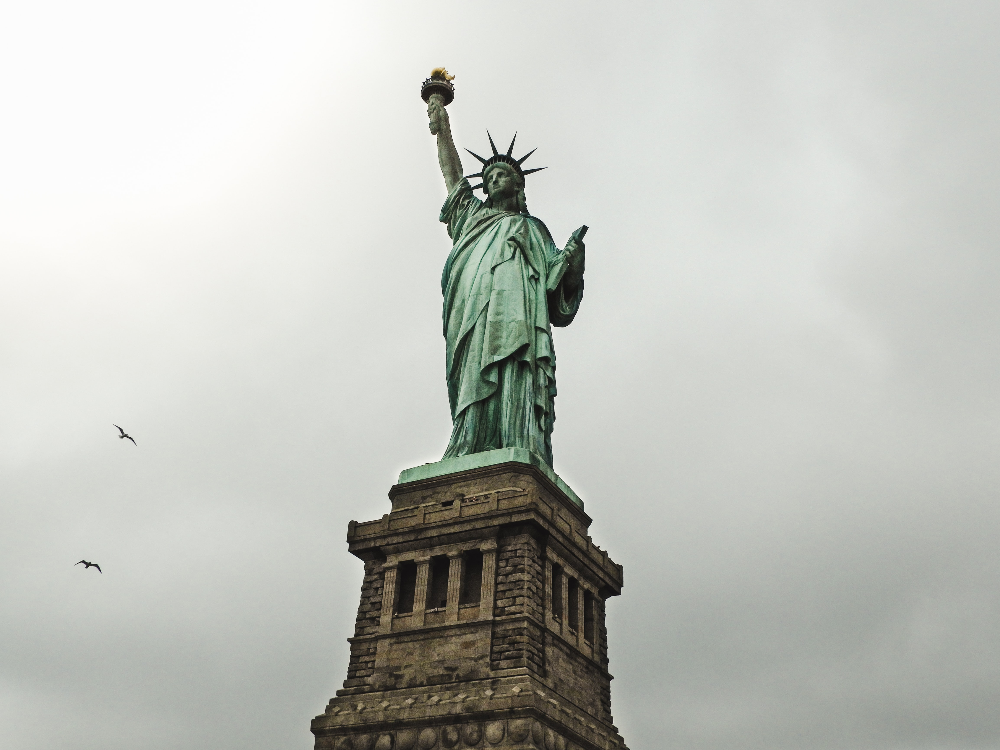

History of New york city

During the 1760s and 1770s, the city was a centre of anti-British activity–for instance, after the British Parliament passed the Stamp Act in 1765, New Yorkers closed their businesses in protest and burned the royal governor in effigy. However, the city was also strategically important, and the British tried to seize it almost as soon as the Revolutionary War began. In August 1776, despite the best efforts of George Washington’s Continental Army in Brooklyn and Harlem Heights, New York City fell to the British. It served as a British military base until 1783. The first native New Yorkers were the Lenape, an Algonquin people who hunted, fished and farmed in the area between the Delaware and Hudson rivers. Europeans began to explore the region at the beginning of the 16th century–among the first was Giovanni da Verrazzano, an Italian who sailed up and down the Atlantic coast in search of a route to Asia–but none settled there until 1624.
Facts about new york city
A little over 8 million people live in New York City. That means 1 in every 38 people in the United States call the city home. More than 800 languages are spoken in New York City, making it the most linguistically diverse city in the world. 4 in 10 households speak a language other than English. Oysters were so popular in New York in the 19th century that the shells were used to pave Pearl Street. They were also used for lime for the masonry of the Trinity Church. France gifted the Statue of Liberty to the United States in 1886 for its centennial celebration. The statue was shipped as 350 pieces in 214 crates and took 4 months to assemble at its current home on Ellis Island. The United Nations headquarters was established in New York City in 1952 after World War II.The first pizzeria in the United States opened in NYC in 1895. Since the 1960s, the price of a slice of pizza has been roughly the same price as a subway ride, generating the idea of “Pizza Principle” among economists. The borough of Brooklyn alone would be the fourth largest city in the United States. Queens would also rank fourth nationally. If you’re a New York homeowner, you can request a tree get planted outside of your home for free. New York City is home to the most billionaires in the world. There are more than 380,000 millionaires in the City. Speaking of money, you’re going to need it if you plan on living in New York City. The average rent price is around $3500 a month. New York City wouldn’t be the same without its round-the-clock fleet of yellow and black taxis. Oddly enough, though, the first gasoline-powered taxis in the City were red and green. New York City cabs didn’t adopt the yellow color until 1912.Imagine this: The entire world’s population could fit in the state of Texas if it were as densely populated at New York City. The Bronx was named after Jonas Bronck, who was the first European to settle in the region in 1639. Over the years, “Bronck” changed to “Bronx” and the rest is history. One of the more interesting facts about New York City is that oysters were so popular in the 19th century their shells were used to pave Pearl Street.
new york city attractions
1. Westfield World Trade Center Oculus
The Oculus is the world’s most expensive train station, serving 12 subway lines and the PATH train, with a beautiful mall inside of it. Its wild exterior designed by Santiago Calatrava, which resembles the skeleton of a whale, has white metal-clad steel ribs that reach up and out which actually symbolize a hand releasing a dove. The structure is a lasting reminder of the attacks of September 11, 2001. It is in alignment with the sun’s solar angles on each September 11, from 8:46 am, when the first plane struck, until 10:28 am, when the second tower collapsed. Its central skylight fits this alignment and washes the Oculus floor with a beam of light. The new shopping center inside has stores like the Apple Store, Aesop, Kate Spade, John Varvatos and others. Dining includes Eataly, Gansevoort Market, Wasabi Sus
2. Edge Observation Deck
The highest outdoor observation deck in the Western Hemisphere has landed at Hudson Yards. Sadly, the bird's-eye attraction dubbed Edge won't be open to the public until 2020. But judging by the rendering, it appears to be worth the wait—that is, if you’re not afraid of heights. The building’s outdoor terrace takes you 65-feet into the sky making it the highest public balcony in NYC. The deck not only features panoramic views of our city’s skyline but a killer vantage point below. Brave souls can stand on a large, see-through glass floor and wave to passerby 1,100 feet beneath. Much like the Top of the Rock concept at Rockefeller Center, there’s a 10,000-square-foot bar, restaurant and event space on the 101st floor.
3. Frick Madison
The Frick Madison is now at 945 Madison Avenue—the former home of the Whitney Museum of American Art and the Met Breuer—while Henry Clay Frick's mansion undergoes a massive renovation. This new stint will last two years, and while the Brutalist building by Marcel Breuer is a huge departure from the Gilded Age mansion, the space is offering a much different and rare look at the collection, according to museum officials. Unlike at the Frick Mansion, the Breuer building is a clean slate—stark in contrast, which actually helps to attract the viewer's attention to individual works. Eyes aren't busy looking at ornate furniture here. It's all about seeing the smaller details in the artwork that you might have overlooked at the mansion. According to Anna-Maria and Stephen Kellen Director Ian Wardropper, "It's a different Frick than you’ve ever known."
4. Citi Field
While they haven’t been as successful as their Bronx rivals in recent years, the Mets can certainly be happy about their stadium, which opened in 2009. With great sightlines, fun activities for kids and a prodigious selection of food and booze (including Shake Shack and Blue Smoke outposts), even those with the barest interest in the game will enjoy themselves at the park, which in recent years has also doubled as a concert venue with appearances by mega-stars like Paul McCartney and Nas.
A view around the city
travel guide

BEST TIME TO GO
New York is a city that's always celebrating something, and summer is one of the best times to visit. Outdoor concert season is in full swing. Free movies and theatrical performances fill the city's parks, street vendors are everywhere, and street fairs abound. But subway platforms can get steamy, lines can get long, and temperatures can soar among the city's high-rises. If this sounds like misery, visit between Thanksgiving and the New Year, when temperatures are cooler and department store windows are decked out for the holidays. During this time, Manhattan's three major outdoor ice rinks are open, a giant Christmas tree marks Rockefeller Center, and holiday light shows are more elaborate than anything you could ever imagine.
Things to Know
New York is a city made up of five boroughs: Manhattan, Brooklyn, Queens, the Bronx, and Staten Island. Most tourist attractions are in Manhattan, with a few scattered across Brooklyn, Queens, and the Bronx. Driving in Manhattan is unnecessary. The city has an extensive public transit system, making it easy to get just about anywhere by subway, bus, cab, and foot. Uber and Lyft are plentiful, while parking can be both a miserable and expensive experience. Meanwhile, the subway is open 24/7. New York is a city that moves fast. Step aside to look at your phone, and remember to stand on the right side of the escalator, so hurried commuters can walk on the left.
How to Get Around
Trains: The New York City subway is one of the most extensive public transit systems in the world. It connects Manhattan, Brooklyn, Queens, and the Bronx, and runs on Staten Island. Each ride costs $2.75. A seven-day pass is available for $33 and covers both trains and buses. Buses: A network of buses offers easy access to the rare spots not served by nearby train stations and to New York's LaGuardia Airport. Individual bus rides cost $2.75. Seven-day transit passes cost $33 and cover trains and buses. While buses can be convenient, traffic can sometimes make them easy to outwalk. Ferries: One of the best ways to hop among New York's boroughs in good weather is a ferry. Ferries connect Queens, the western coast of Brooklyn, the eastern side of Manhattan, and Staten Island. Rides are $2.75 each. Subway and bus passes aren't accepted on New York ferries. The Staten Island Ferry is free. Taxis: Cabs are all over Manhattan, but a little harder to find in parts of Brooklyn, Queens, and the Bronx. Green cabs offer service in northern Manhattan and the outer boroughs. To hail a cab, look for one that has its light on and raise your arm. All New York cabs are metered and required to accept credit cards.